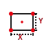
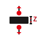
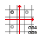
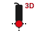

🎨 CNC Macro Icons
Sorotec Eding CNC V3.6 | Minimalistisch Modern | 18 Icons
🎨 Farbschema: Sorotec-Branding
Primär (Rot): #E30613 Sekundär (Schwarz): #1A1A1A
📐 Größen-Demonstration
32x32
48x48
64x64
96x96
128x128
🔧 User-Funktionen (user_1 bis user_12)
user_1: Werkzeuglänge
Automatische Messung der Werkzeuglänge mit Tool-Sensor
user_1_tool_length.svg

user_2: Z-Nullpunkt
Ermittlung des Z-Nullpunkts auf Werkstückoberfläche
user_2_z_zero.svg

user_3: Spindel-Warmlauf
4-stufiger Spindel-Warmlauf für Präzision
user_3_spindle_warmup.svg

user_4: Werkzeugwechsel
Manueller Werkzeugwechsel mit Vermessung
user_4_tool_change.svg

user_5: Einzelkanten
Antastung einzelner Kanten mit Nullpunktsetzung
user_5_edge_probe.svg
user_6: Ecken + Rotation
2-Punkte-Messung mit Rotationsberechnung
user_6_corner_rotation.svg

user_7: Loch-Antastung
Mittelpunktbestimmung von Löchern (4-Punkt)
user_7_hole_probe.svg

user_8: Zylinder-Antastung
Außenmittelpunkt von Zylindern/Bossen
user_8_cylinder_probe.svg
user_9: Bruchkontrolle
Automatische Prüfung auf Werkzeugbruch
user_9_break_check.svg

user_10: Rechteck-Vermessung
4-Kanten mit Maßgenauigkeitskontrolle
user_10_rectangle_measure.svg

user_11: Dicken-Messung
Werkstückdicke für doppelseitige Bearbeitung
user_11_thickness_measure.svg

user_12: Koordinaten-Manager
Verwaltung von G54-G59 Systemen
user_12_coordinate_manager.svg
⚙️ Hilfsfunktionen

Konfiguration
Zugriff auf Konfigurationsmenü und Parameter
config.svg

Referenzfahrt
Referenzfahrt aller Achsen (Homing)
home_all.svg

3D-Taster
3D-Taster Indikator und Status
probe_3d.svg

Sensor-Prüfung
Sensor-Verbindung und Status prüfen
sensor_check.svg

Handrad
Handrad-Controller Integration (XHC)
handwheel.svg

Not-Stopp
Not-Aus / Stopp-Funktion
emergency_stop.svg